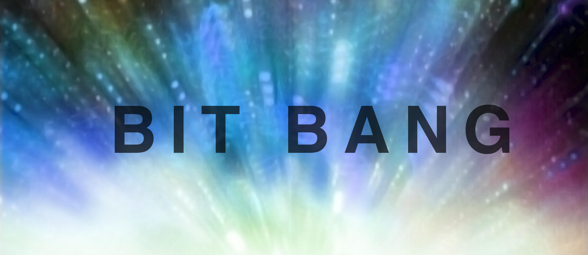
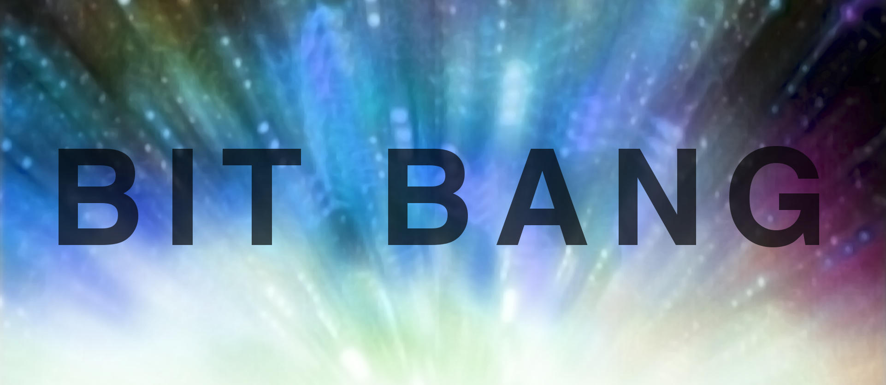

Yhteiskunta on rakennettu digitaalisten laitteiden ja niiden sovellusten varaan. Digitaalisuus on kolmannen teollisen vallankumouksen ydin. Se on jatkoa sähkön ja höyrykoneen mullistaville vaikutuksille. Digikumous on seurausta mikropiirien pienenemisestä ja halpenemisesta sekä tietokoneiden laskentakapasiteetin kasvun ja tietoliikenteen nopeutumisesta.
Yrjö Neuvo on ollut tutkimassa, kokeilemassa ja rakentamassa digitaalisuuden läpimurtoa ja sovelluksia pian viisi vuosikymmentä. Hän on pitänyt lukuisia esityksiä eri puolilla maailmaa digikumouksesta ja sen vaikutuksista. Esityksiensä otsikoihin hän on pyrkinyt löytämään uteliaisuutta herättävän komponentin, kuten Unfogging the Future, Innovation a Day Keeps Recession Away tai Tomorrow’s Technology Today. Bit Bang -sanayhdistelmän hän keksi keväällä 2008.
Linkki Martti Häikiön ja Essi Ylitalon kirjoittaman kirjan Bit Bang – Yrjö Neuvo ja digitaalinen kumous (SKS 2013) esittelyyn SKS:n verkkokaupassa.
Bit Bang -kirjan sivuilla on QR-koodeja, jotka antavat lukijalle täydentävää tietoa kirjassa käsiteltävistä tekniikoista, niiden sovelluksista ja tulevaisuuden näkymistä. Oheisesta linkistä voit tutustua tähän materiaaliin. Materiaali on sovitettu sekä mobiililaitteissa että koti- tai opetusympäristössä katsottavaksi. Kirjassa on lisäksi Windows-puhelimissa toimiva lisätyn todellisuuden esittely, jonka tarvitsema erityinen markkeri on painettu kirjan takakanteen.
Yrjö Neuvo on pitänyt Aalto-yliopiston tohtoriopiskelijoille yleisiä työelämän valmiuksia antavia lukuvuoden kestäviä kursseja nyt viisi kertaa. Kurssisarja kantaa Bit Bang -nimeä ensimmäisen kurssin Bit Bang Rays to the Future perintönä. Opiskelijat ovat tiimityönä kirjoittaneet kunkin vuoden teemasta kirjan. Kirjat ovat vapaasti ladattavissa.
Future of Internet Entrepreneurship and Services Energising Innovation, Innovating Energy Rays to the Future